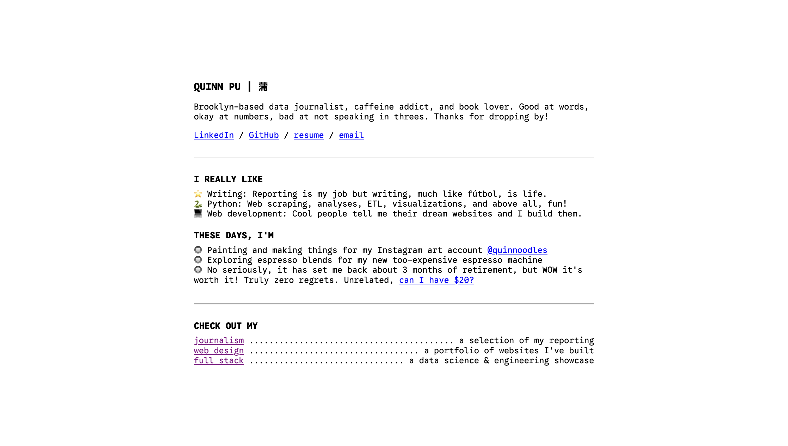

I make websites ↩
In 2022, I sat down at my dorm desk and thought, I really want to make myself a website. I wasn't satisfied with any of the themes or drag & drop options on the internet, though, so I googled "hwo to mmake a ewbsite" and became best friends with W3Schools. My first website was bad, but my friends were very kind and some of them even asked me to make them a website. Here are some of them!
⇱ Dan Toomey

I'm not even gonna pretend like this isn't my magnum opus.
⇱ Quinn Pu

Woah, what's this? My website inside my website? If you click on it it takes you back to this website, which technically means you didn't go anywhere, but you should try it anyway in case Google counts it as a separate visit.